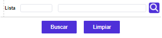
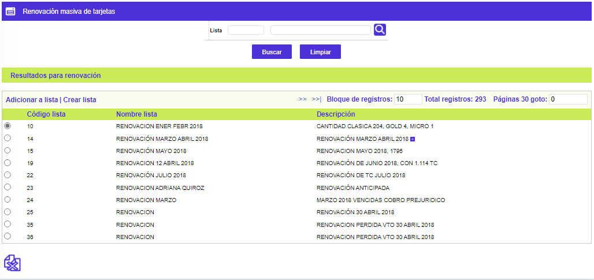
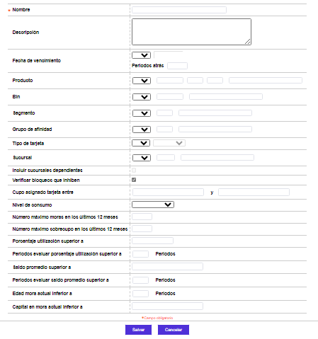
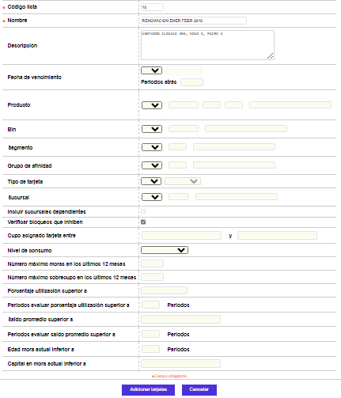

Renovación masiva de tarjetas
Mediante esta función se efectúa el proceso de generación de nuevos plásticos y actualización de la fecha de vencimiento de las tarjetas que cumplan con los criterios seleccionados por la entidad; la opción cuenta con una opción especial que permite bloquear tarjetas por no renovación con base en un mes y año de vencimiento determinados.
Filtro: El formulario cuenta con un filtro inicial, que puede ser utilizado para agilizar la búsqueda de una lista.

Lista |
Si el usuario invoca el filtro, el sistema le debe permitir ingresar el código de la lista que desea consultar. El campo es numérico de hasta 8 dígitos |
El formulario contiene los enlaces: Crear lista, Eliminar lista, y Adicionar a lista. Adicionalmente, cuenta en la parte superior con las opciones Resultados para renovación y Resultados para activación.

Crear lista: Si el usuario invoca esta opción, se despliega un formulario con los siguientes campos:

Nombre lista |
En esta campo cuyo diligenciamiento es obligatorio, la entidad asigna un nombre a la lista de criterios para ser utilizado en futuras variaciones de cupo o para guardar los conceptos que se tuvieron en cuenta en determinado período en el cual se ejecutó dicho proceso. |
Descripción |
Espacio destinado para que la entidad registre información adicional que considere pertinente dentro de la generación del proceso de acuerdo con los criterios definidos. |
Usar fórmula |
Este campo se marca cuando la entidad decide que parte de los criterios tenidos en cuenta para la variación de cupo de los productos, sea la aplicación de la fórmula de evaluación de capacidad de endeudamiento definidas previamente en la opción Parámetros de solicitudes. |
Puntaje mínimo |
Campo alfanumérico de 3 posiciones, no obligatorio, que se activa una vez la entidad decida que para el proceso se efectuará la evaluación de la capacidad de endeudamiento, en el que se registra el resultado mínimo que debe obtener el producto después de la aplicación de la fórmula de evaluación, para que éstos sean susceptibles de variación de cupo. |
Fecha vencimiento |
Campo en formato YYYY-MM, en el que se ingresa la fecha de vencimiento de los productos sobre los cuales se desea realizar la renovación. De acuerdo con la fecha definida, al marcar el campo igual (=), significa que el proceso de renovación masiva se realizará únicamente a los productos que se vencen en esa fecha registrada; si se marca el campo menor igual (<=) significa que el proceso de renovación masiva se realizará a los productos que se vencen en esa fecha registrada y fechas anteriores a la misma, determinadas con base en el número de periodos anteriores definido en el campo siguiente, de tal manera que renovará a todos los productos vencidos no renovados que encuentre. |
Definición de producto |
En este campo que cuenta con lista de valores poblada la opción Definición de productos.Mediante una lista de valores poblada en la opción productos del módulo de mercadeo, la entidad selecciona el producto que se llevará al proceso de variación de cupo, en el caso que se marque el campo igual(=), o los productos distintos al seleccionado, en el caso de marcar el campo diferente(=!); su diligenciamiento no es obligatorio. En el evento de diligenciar este campo, se deshabilitan los campos bin, segmento y grupo, puesto que éstos son los que conforman el producto y dicha información está implícita al seleccionar un producto determinado. |
Bin |
En este campo la entidad selecciona cuál Bin llevará al proceso de variación de cupo, en el caso que se marque el campo igual (=), o por el contrario se le indica al sistema variar el cupo a aquellos bines diferentes al seleccionado de la lista de valores. Su diligenciamiento no es obligatorio. |
Producto |
En este campo la entidad selecciona cuál Producto llevará al proceso de variación de cupo, en el caso que se marque el campo igual (=), o por el contrario se le indica al sistema variar el cupo a aquellos productos diferentes al seleccionado de la lista de valores. Su diligenciamiento no es obligatorio. |
Grupo de afinidad |
En este campo la entidad selecciona cuál Grupo de afinidad llevará al proceso de variación de cupo, en el caso que se marque el campo igual (=), o por el contrario se le indica al sistema variar el cupo a aquellos grupos diferentes al seleccionado de la lista de valores. Su diligenciamiento no es obligatorio. |
Tipo de tarjeta |
A partir de la lista de valores adjunta, la entidad determina sobre que clase de producto se efectuará el proceso de renovación, es decir, si éste se efectuará sobre las tarjetas principales o adicionales (extendidas o amparadas). Su diligenciamiento no es obligatorio. |
Sucursal |
A través de la lista de valores poblada en la opción estructura orgánica del módulo núcleo, la entidad selecciona sobre cuál sucursal específica se desea realizar el proceso de variación masiva de cupo. |
Incluir sucursales dependientes |
En el caso que la sucursal seleccionada posea oficinas dependientes dentro de la estructura orgánica de la entidad y se desee variar el cupo también de los productos de dichas oficinas, se debe marcar este campo. |
Verificar bloqueos que inhiben |
Este campo se debe marcar para determinar, que de acuerdo con las acciones habilitadas definidas previamente en la opción estados y bloqueos del Núcleo, permita realizar el proceso de variación masiva de cupo de los productos que se encuentran bloqueados en el momento de la generación de dicho proceso. |
Cupo asignado tarjeta entre ... y .. |
Campos numéricos de 16 posiciones (14 enteros y dos decimales), no obligatorios, a través de los cuales la entidad define el rango de cupos asignados (inicial y final) a las tarjetas que se tendrán en cuenta en el proceso de variación masiva de cupo. |
Nivel de consumo |
Este campo contiene una lista de valores adjunta en la cual la entidad selecciona el porcentaje que determina el nivel de consumo de acuerdo con el cupo aprobado del producto para que éste sea susceptible de ser variado (Compara el consumo total = Compras normales + Compras especiales + Avances, contra el cupo total asignado a la tarjeta). |
Número máximo moras en los últimos 12 meses |
Campo numérico de 3 dígitos, no obligatorio, en el cual se define la cantidad máxima de períodos (expresado en meses) de mora que haya incurrido el cliente para que pueda ser considerado en el proceso de variación de cupo. |
Número máximo sobrecupo en los últimos 12 meses |
En este campo numérico de 3 dígitos, no obligatorio, en el que se indica la cantidad máxima de períodos (expresado en meses) de sobrecupo que haya incurrido el cliente para que pueda ser considerado en el proceso de variación de cupo. |
Porcentaje utilización superior a |
Campo numérico de 7 dígitos, no obligatorio, en el cual se define la proporción promedio de utilizaciones respecto al cupo total que debe tener como mínimo el producto para ser tenido en cuenta en el proceso de variación de cupo. |
Periodos evaluar porcentaje utilización superior a |
En este campo numérico de 3 dígitos, que se hace obligatorio cuando se ha definido algún valor en el campo inmediatamente anterior, se registra la cantidad de períodos (expresado en meses) sobre los cuales se tendrá en cuenta dicho promedio para que el producto pueda ser considerado en el proceso de variación de cupo. |
Saldo promedio superior a |
Campo numérico de 18 dígitos, no obligatorio, en el cual se define el valor promedio de utilizaciones que debe tener como mínimo el producto para ser tenido en cuenta en el proceso de variación de cupo. |
Periodos evaluar saldo promedio superior a |
Este campo numérico de 3 dígitos, que se hace obligatorio cuando se ha definido algún valor en el campo inmediatamente anterior, se registra la cantidad de períodos (expresado en meses) sobre los cuales se tendrá en cuenta dicho promedio para que el producto pueda ser considerado en el proceso de variación de cupo. |
Edad de mora actual inferior a |
De acuerdo con la maduración de la cartera, se establecen unos rangos de evaluación correspondientes a los períodos sobre los cuales ha permanecido vencido determinado saldo de un cliente; en el momento de diligenciar este campo se está indicando al sistema que varíe el cupo únicamente de las tarjetas que no superen dicho vencimiento cuando se realice el proceso. Es un campo numérico de 3 posiciones y su diligenciamiento no es obligatorio. |
Capital en mora actual inferior a |
Este parámetro tiene estrecha relación, con el descrito anteriormente puesto que es la continuidad del mismo, de tal manera que, de acuerdo con la maduración de la cartera, en el momento de diligenciar este campo se está indicando al sistema que varíe el cupo únicamente de las tarjetas que no superen dicho monto de capital vencido cuando se realice el proceso. Es un campo numérico de 3 posiciones y su diligenciamiento no es obligatorio. |
Adicionar a lista: Si el usuario invoca esta opción, se despliega un nuevo formulario en el cual los únicos campos no modificables son: Nombre lista, y Descripción.
